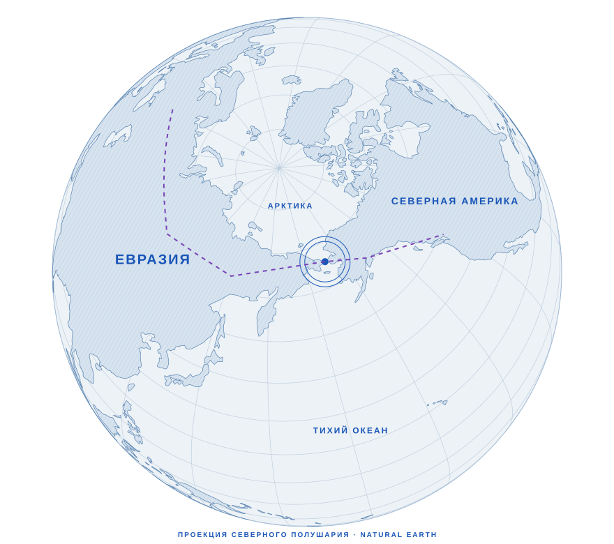
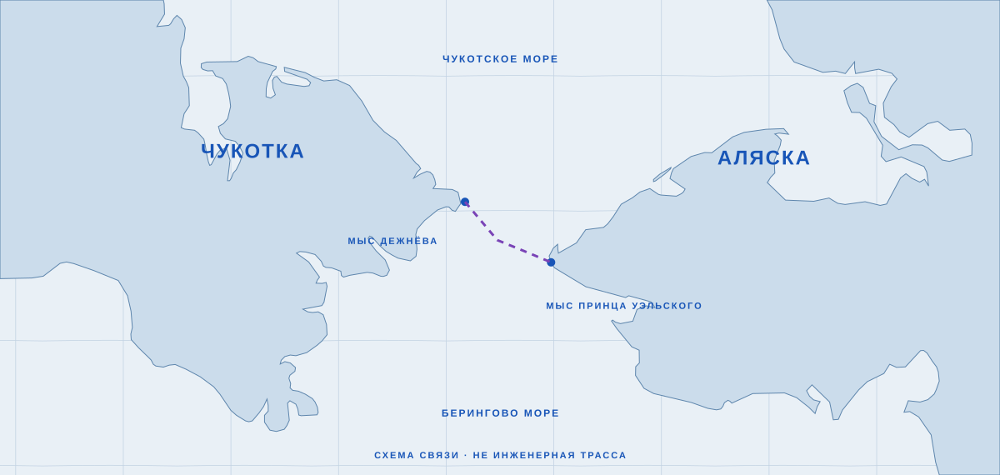

ИСТОРИЧЕСКАЯ ИДЕЯA
Дамба для климата
Насосы → водообмен → изменение климата.
От климатической дамбы —
к связи двух континентов.

1957[1]. Пётр Борисов: дамба и насосы, чтобы согреть Арктику.
Польза и осуществимость не доказаны.

Насосы → водообмен → изменение климата.
Железная дорога → грузы → общая сеть.
ВАЖНО Далее — модель транспортного коридора. Климатические насосы в неё не входят.
Холодная война заканчивается.
Пространство для диалога растёт.
Морская граница. Международный парк. Решения о переходе нет.
Документы саммита [3, 4] ↗А ЧТО, ЕСЛИВ тот же день — соглашение об изысканиях?
Вымышленная развилка.
Четыре партнёра.
Один транспортный коридор.
Условные доллары 1990 года. Авторская модель.
Ширина = доля капитала · движение = направление
Иностранный капитал = бюджет × доля. Внутри него: США — 50%, Япония — 30%, Европа — 20%. Накопленный капитал = бюджет × прошедшие годы ÷ горизонт. Взносы прекращаются в конце выбранного периода.
Пропорции расходов постоянны. Без процентов, инфляции, валютного риска и перерасхода. Взносы и даты не обещаны инвесторами; капитал может создавать долг.
Линии истории — без шкалы ВВП или вероятности.
Диалог продолжился. Переход остался предложением.
При независимом арбитраже
При участии регионов в доходах
При взаимной выгоде от транзита
Возможные механизмы, не прогноз. Сам по себе переход не гарантирует демократизацию или мир.
Проектное финансирование возможно при гарантиях возврата, защите контрактов и приемлемом валютном риске.
Рабочие места и логистика — при строительстве подходов, реальном спросе и участии местных и коренных сообществ.
Технологии и капитал могли бы стать предметом переговоров. Территориальные споры от этого не исчезают.
Контракты и коридоры требуют общих стандартов, доступа к рынкам и устойчивых политических отношений.
Переход не гарантировал бы ни сохранения СССР, ни процветания России.
Альтернативная ветка: совместные исследования → условный консорциум → транспортная сеть при наличии спроса и гарантий. Это гипотеза, без заданных дат строительства. Для переключения веток включите JavaScript.
Шесть условий.
Каждое необходимо.
Подтверждённого контракта на стройку не было.
Авторская схема. Красный = препятствие.
Расстояние — вопрос инженерии.
Сотрудничество — вопрос выбора.